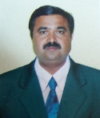

HOME / DEPARTMENT OF VTU / INFORMATION SCIENCE AND
ENGINEERING
ABOUT DEPARTMENT
The Department of Information Science & Engineering was started in the year 2001 with an approved intake of
60.
The department has a good team of dynamic, highly qualified and dedicated teaching and non-teaching staff,
who are experienced both in industry and academics and ready for lending their hand in any situations to
boost every individual student.
Most of the faculty members are having PhDs, moreover many are pursuing their PhDs at various reputed
universities and their area of
research are Data Mining, Cloud Computing, Wireless Sensor Networks, Neural Networks etc, to name a few.
Under the faculty development programs,
the staff members are encouraged to periodically attend refresher courses to keep themselves updated with
the latest technologies and upgrade their skills.
The department has an excellent state of the art infrastructure in both hardware and software resources. The
department has well –equipped laboratories with
220+ branded computers in various computer labs such as Computer Programming lab, Data Structures lab,
Design, and algorithms lab, Networks Lab,
Programming the Web lab, Electronics Circuits & Logic Design lab, Microprocessor lab, etc., There is a
dedicated Internet connection with capacity
of 50Mbps. Faculty to student ratio is very good, 1:15 with an average teaching experience greater than 10
years. The department is
committed to developing the IT leaders of tomorrow. The department is dedicated to education research and
overall excellence.
CHAIRPERSON

Dr. Chikkanna N
Professor and Chairperson
Department of Information Science and Engineering
Machhe, VTU-Belagavi-590018
Mail:- chair.cse@vtu.ac.in
Cell:-+919481981542